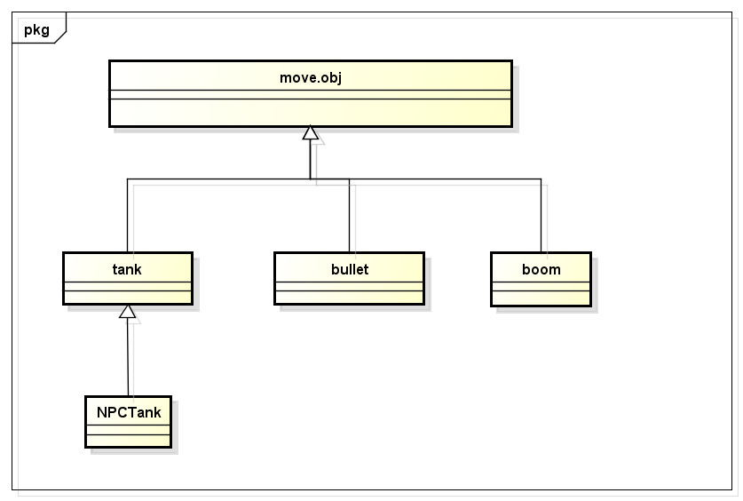

前言
javascript与程序的语言比如C#或者java不一样，他并没有“类”的概念，虽然最新的ECMAScript提出了Class的概念，我们却没有怎么用
就单以C#与Java来说，要到真正理解面向对象的程度也是要花一点功夫的，特别是初学的同学往往意识不到面向对象的好处，因为我们编码的流程是这样的
① 面向过程
这个时候，我们要思想一个东西，往往就用一个大代码段完成了
② 方法重用
我们有时候再也受不了重复的代码在一个地方存在了，于是这个时候我们会将相同的逻辑抽象为一个方法
③ 当代码达到一定量的时候，我们发现另一个模块似乎实现了相似的功能，当前这种情况越来越多的发生时，我们会将之变成一个“类”
④ 类的出现又带来了继承等特性，这个就是我们所谓面向对象了
面向过程VS面向对象
面向过程的代码效率高，代码清晰，甚至本身不会发生耦合的现象，但这个只是适用于代码量较小或者说复杂度低的系统
系统稍微变大，面向过程的代码将变得难以维护并且难以扩展
面向对象的代码自然效率要稍低，至少代码复杂度要上升，对初学者来说不太好理解，加上模块划分后方法东一个西一个
如果没有好的设计，出来的代码会互相影响，系统层次混乱，但是好的面向对象的设计会让系统代码变得优雅并且有所依据
比如没有面向对象的类，什么观察者、工厂模式是玩不转的
所以面向过程与面向对象的设计没有明显的好坏之分，要看使用场景，系统比较复杂的话就不要去搞面向过程了，因为多人维护一个文件比上面所以问题都要复杂
此文以一个小型的坦克大战游戏来介绍“面向对象”的在前端javascript中的一些使用场景，希望对各位理解面向对象编程有所帮助
由于本人水平有限，文中想法有误，请您提出
游戏简介
游戏源码
https://github.com/yexiaochai/blade/tree/master（请看其中的tank文件夹）
50918787015161.html（demo地址）
俗话说得好，没图你说个JB，我这里当然是有图的！
游戏说明
做这个游戏的目的其实主要是验证Blade框架ui.abstract.view的设计是否合理，因为我准备将他用到实际工作中了，于是这里便花了周末两天做这个游戏
PS:游戏中的图片全部是“偷”的，到现在连偷的谁的都不知道了，代码完全自己写的，这里没有抄袭
这里说是坦克大战，其实不然，因为小时候红白机的坦克大战实现起来还是要复杂的多，要实现那种程度的话两天时间怕是妄想了
于是这里实现的便是简版了，说是简版，其实他的原型是我们小时候玩的手柄游戏机中的坦克大战，不知各位还记不记得
功能玩法
游戏玩法便是与NPC坦克不停的厮杀，厮杀过程中英雄坦克会不停的升级，升级后整体性能会提升，但是随着级数增加NPC坦克的数量会不停增加
所以一般20多级我就挂了，挂了后也未做什么处理，主要原因是这两天写得太累了！！！
游戏扩展
事实上这个游戏是可以扩展的，虽然我这里未做扩展
首先子弹可做扩展，比如英雄的子弹可以变成激光或者散弹
其次NPC是可扩展的，扩展时候NPC可以设定为跟着英雄跑
以上都未实现：），这里这样说是因为游戏本身是以面向对象的方式实现，所以就算我要实现以上功能可以十分方便
代码缺陷
最初的想法很好，写面向对象的程序，但是真正代码过程中仍然有一些不够“面向对象”的写法，如果后面有时间对他进行重构，这是主要要做的事情
另外，代码写了后只经过了简单测试，有BUG就不要见外了，可以留言嘛
代码实现
其实游戏的实现，首先要有一个全局的控制器，我这里全局的控制器为app


this.app = { //英雄升级参数 levelParameter: [ { speed: 1, bulletSpeed: 4, maxBulletSize: 1, init: 0 }, { speed: 1, bulletSpeed: 4, maxBulletSize: 1, init: 0 }, { speed: 2, bulletSpeed: 6, maxBulletSize: 1, init: 0 }, { speed: 2, bulletSpeed: 6, maxBulletSize: 2, init: 32 }, { speed: 2, bulletSpeed: 6, maxBulletSize: 2, init: 32 }, { speed: 2, bulletSpeed: 6, maxBulletSize: 3, init: 64 }, { speed: 2, bulletSpeed: 6, maxBulletSize: 4, init: 64 }, { speed: 2, bulletSpeed: 6, maxBulletSize: 4, init: 96 }, { speed: 2, bulletSpeed: 7, maxBulletSize: 5, init: 96 } ], npcObj: { NO1: { dirObj: { init: 32 * 4 } }, NO2: { dirObj: { init: 32 * (4 + 2) }, datamodel: { speed: 2 } }, NO3: { dirObj: { init: 32 * (4 + 4) }, datamodel: { bulletSpeed: 6 } }, NO4: { dirObj: { init: 32 * (4 + 6) }, HP: 4 } }, maxNpcSize: 2, npcSize: 0, gameStatus: false, GAMEOBJ: { hero: [], //暂时只有一个hero，这里先不予关注 npc: [], heroBullet: [], npcBullet: [], boom: [] }, tick: $.proxy(function () { if (this.me.status == 'destroy') { this.app.gameStatus = false; } $.each(this.app.GAMEOBJ, $.proxy(function (k, v) { //首先做筛选 this.app.GAMEOBJ[k] = _.filter(this.app.GAMEOBJ[k], function (item) { return item.status !== 'destroy'; }); for (var i = 0, len = this.app.GAMEOBJ[k].length; i < len; i++) { this.app.GAMEOBJ[k][i].move(); } }, this)); this.createNPC(); this.dataChange(); this.levelUp(); if (this.app.gameStatus) { rAF($.proxy(this.app.tick, this)); } }, this), //创建NPC坦克 createNPC: $.proxy(function (opts) { opts = $.extend({ gameRule: 'npc', wrapper: this.$el.find('#map'), app: this.app }, opts, true); var flag = parseInt(Math.random() * 4); if (parseInt(Math.random() * 5) == 4) { opts.speciality = 'hp'; } opts = $.extend(opts, this.app.npcObj['NO' + (flag + 1)], true); console.log(opts) var npc = new NPCTank(opts); var i, len, bullet; npc.show(); /*这里英雄每一步移动会对NPC产生影响，同样NPC会对影响造成影响 npc只需要关注英雄和英雄发出的子弹即可，英雄处理要复杂的对多 */ this.me.registerObserver(npc); npc.registerObserver(this.me); //缺陷，npc暂时不关注npc，可互相穿透 // $.each(this.app.GAMEOBJ.npc, function (i, item) { // npc.registerObserver(item); // }); //记录最后一个npc以便测试 this.npc = npc; this.app.GAMEOBJ.npc.push(npc); }, this), //创建我方英雄坦克 createHero: $.proxy(function () { this.me = new Tank({ datamodel: { x: 192, y: 192 }, gameRule: 'hero', wrapper: this.$el.find('#map'), app: this.app }); this.me.show(); window.me = this.me; this.app.GAMEOBJ.hero.push(this.me); }, this), createBullet: $.proxy(function (opts) { //子弹的创建要区分是hero还是npc opts = $.extend({ wrapper: this.$el.find('#map'), app: this.app }, opts, true); var gameRule = opts.gameRule; var bullet = new Bullet(opts); bullet.show(); //这里根据子弹角色不同，会有不同的观察对象，npc子弹对应英雄，英雄子弹对象npc！ //英雄子弹需要被npc坦克以及子弹观察 if (gameRule == 'heroBullet') { $.each(this.app.GAMEOBJ.npc, function (i, item) { bullet.registerObserver(item); }); $.each(this.app.GAMEOBJ.npcBullet, function (i, item) { bullet.registerObserver(item); }); } else if (gameRule == 'npcBullet') { //npc子弹来了，英雄就要小心了 $.each(this.app.GAMEOBJ.hero, function (i, item) { bullet.registerObserver(item); }); $.each(this.app.GAMEOBJ.heroBullet, function (i, item) { bullet.registerObserver(item); }); } this.app.GAMEOBJ[gameRule].push(bullet); return bullet; }, this), createBoom: $.proxy(function (opts) { opts = $.extend({ wrapper: this.$el.find('#map'), app: this.app }, opts, true); var boom = new Boom(opts); boom.show(); this.app.GAMEOBJ.boom.push(boom); return boom; }, this) };
这个全局控制器扮演着“游戏时钟”的角色
1 tick: $.proxy(function () { 2 if (this.me.status == 'destroy') { 3 this.app.gameStatus = false; 4 } 5 6 $.each(this.app.GAMEOBJ, $.proxy(function (k, v) { 7 //首先做筛选 8 this.app.GAMEOBJ[k] = _.filter(this.app.GAMEOBJ[k], function (item) { 9 return item.status !== 'destroy'; 10 }); 11 for (var i = 0, len = this.app.GAMEOBJ[k].length; i < len; i++) { 12 this.app.GAMEOBJ[k][i].move(); 13 } 14 }, this)); 15 16 this.createNPC(); 17 this.dataChange(); 18 this.levelUp(); 19 20 if (this.app.gameStatus) { 21 rAF($.proxy(this.app.tick, this)); 22 } 23 24 }, this),
他每过一段时间便会通知游戏对象运动一下，再根据彼此的运动引发游戏事件，这个是一个典型的发布订阅模型
游戏时钟变化，然后通知到其它所有对象运动，并且需要做对象销毁工作
而游戏对象完全继承自一个对象“moveOBJ”运动对象，继承关系为：

结语
本来是想多说几句的，但是最近两天编码有点累，各位自己去看源码吧，我这里扛不住了。。。。。。